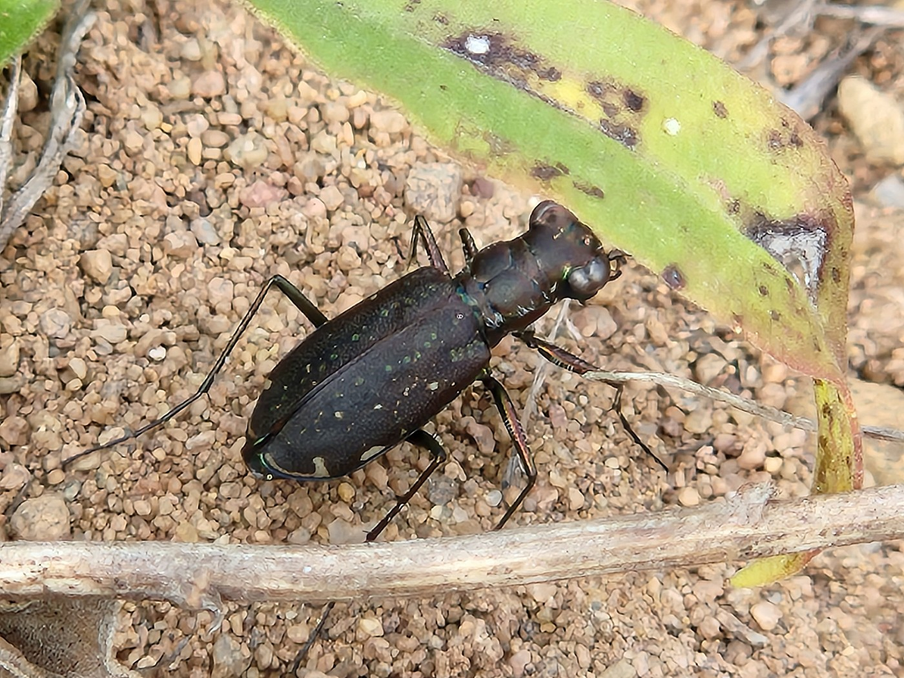
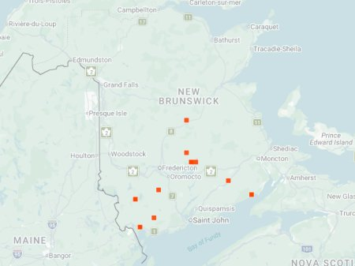

photo: Rebecca McCluskey, Sept 3, 2025

Distribution map (based on iNaturalist observations)
Identification
- Medium-sized (11–14 mm), dark bronze to black with fine punctures on elytra and reduced white maculations.
- Metallic green reflections on head/pronotum; long legs for fast running.
- Active in summer; often on open, dry ground or paths.
Habitat in New Brunswick
Prefers open, dry sandy or gravelly areas, roadsides, clearings, and disturbed sites. Tolerates a range of substrates but favors exposed ground with minimal vegetation.
Flight Season in NB
July 7 – September 3 (summer active).
Distribution & Notes
Scattered in southern and central New Brunswick, often in disturbed or open habitats. Less common than some spring species; more surveys needed in northern areas to confirm range.